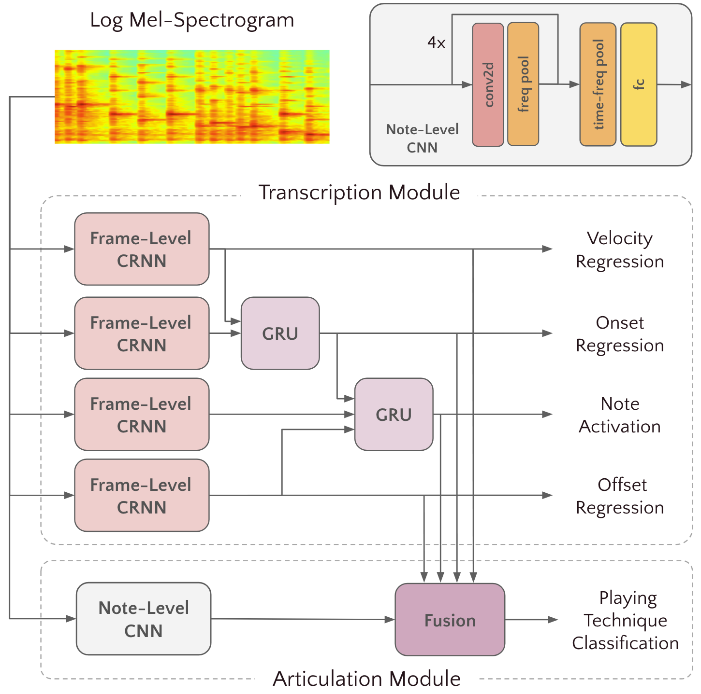
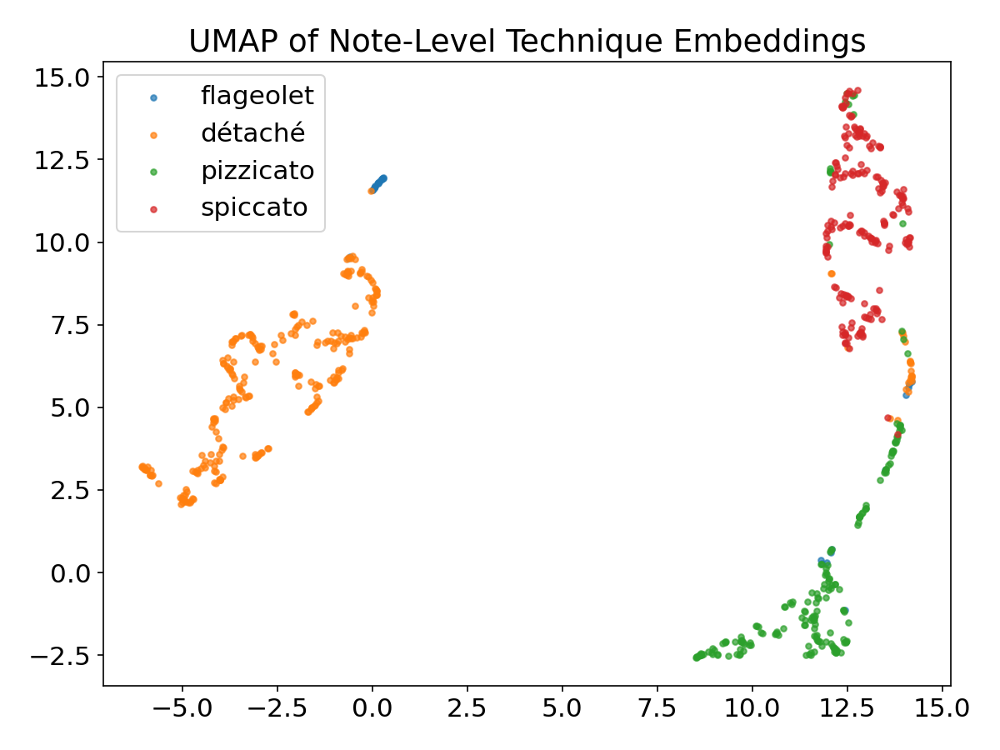

1 Motivation
Automatic music transcription (AMT) has achieved substantial progress, yet most systems only capture pitch and timing, overlooking expressive, instrument-specific nuances.
We propose VioPTT, the first model to jointly transcribe violin pitch, onset, offset, and playing technique within a unified framework.
2 Key Contributions
- Lightweight cascade architecture combining a transcription module with an articulation module for joint note + technique prediction
- MOSA-VPT: a novel 76-hour synthetic violin technique dataset eliminating the need for manual annotation
- State-of-the-art transcription without pretrained representations from other instruments
- Strong generalization from synthetic training data to real-world violin technique recognition
3 Model Architecture

Fig. 1: Overview of our technique-aware violin transcription model.
Training Objective
4 Data & Augmentation
Datasets
19 hrs solo violin · 15 expert players · Note-level annotations with pitch, rhythm, dynamics & articulation
76 hrs audio-MIDI pairs · 4 techniques balanced · Rendered via DAWDreamer + Synchron Solo Violin I
44 chamber pieces + 10 four-part chorales with annotated pitch and timing
Real-world chromatic scales with multiple dynamics and playing styles
Technique Synthesis Pipeline
MIDI scores → DAWDreamer (VST host) → Synchron Solo Violin I → key-switch + CC control → mono 16 kHz stems. Fully annotation-free and generalizable to any VST instrument.
Pitch & Timing Augmentation
Pitch shift (±0.1 st) · +5 dB gain · 2× random band-pass (32–4096 Hz) · Reverb (room 0.35)
5 Transcription Results
| Model | URMP | Bach10 | ||||||
|---|---|---|---|---|---|---|---|---|
| P | R | F1 | F1no | P | R | F1 | F1no | |
| Ours w/o aug | 83.4 | 81.2 | 82.2 | 92.8 | 66.7 | 71.3 | 68.9 | 79.0 |
| Ours w/ aug | 86.1 | 83.6 | 84.5 | 93.1 | 68.1 | 71.8 | 69.9 | 79.5 |
| Ours + FT w/o aug | 84.4 | 79.0 | 81.3 | 91.3 | 69.5 | 73.7 | 71.5 | 80.2 |
| Ours + FT w/ aug | 85.0 | 82.1 | 83.3 | 92.9 | 63.3 | 68.4 | 65.7 | 77.8 |
| MUSC [Tamer '24] | 86.5 | 83.1 | 84.6 | 93.0 | 65.0 | 64.8 | 64.8 | 77.0 |
| MERTech [Chen '24] | 26.6 | 33.7 | 29.8 | 30.3 | 27.6 | 53.4 | 36.4 | 36.9 |
"FT" = fine-tuned from piano-pretrained checkpoint · "aug" = augmentation · Bold = best · Underlined = second-best
6 Technique Classification Results
| Ablation | Macro Acc (%) | Flageolet (%) | Détaché (%) | Pizzicato (%) | Spiccato (%) |
|---|---|---|---|---|---|
| Full ablation | 70.46 ±2.57 | 86.44 ±4.19 | 51.75 ±9.97 | 57.06 ±15.33 | 86.56 ±2.55 |
| Frame excl. | 66.21 ±13.24 | 71.79 ±16.53 | 70.16 ±32.58 | 63.80 ±38.66 | 59.10 ±19.71 |
| Offset excl. | 59.71 ±10.19 | 72.80 ±27.65 | 55.41 ±24.71 | 52.75 ±45.82 | 57.85 ±24.79 |
| Onset excl. | 65.82 ±8.63 | 91.55 ±1.96 | 51.94 ±19.77 | 65.47 ±20.35 | 54.34 ±11.90 |
| Velocity excl. | 55.59 ±3.55 | 77.07 ±22.73 | 65.67 ±26.70 | 0.16 ±0.28 | 79.45 ±2.81 |
| No ablation | 77.22 ±6.35 | 71.89 ±14.12 | 63.12 ±12.59 | 88.80 ±3.11 | 85.08 ±4.87 |
| MERTech [16] | 53.36 ±1.02 | 95.77 ±2.23 | 58.80 ±1.63 | 43.27 ±1.19 | 15.61 ±2.06 |
Mean ± std from 3 random data splits on RWC dataset. Bold = best, Underlined = second-best per column.
7 Confusion Matrix
Predictions aggregated across all folds
← Predicted → ↑ True ↑
8 UMAP Embedding Visualization

Fig. 3: UMAP visualization of RWC data on learned note-level embeddings. Despite training on synthetic data only, learned representations generalize to unseen real-world recordings with clear class separation.
9 Conclusions & Future Work
- 93.1 F1no on URMP — matching SOTA with ~30% less data
- 77.2% macro accuracy on real-world technique classification
- 76 hrs synthetic technique data — no expert annotation needed
- 1st joint violin transcription + technique prediction model
Future work: Extend synthesis framework to a broader range of techniques and other bowed string instruments (viola, cello, double bass).